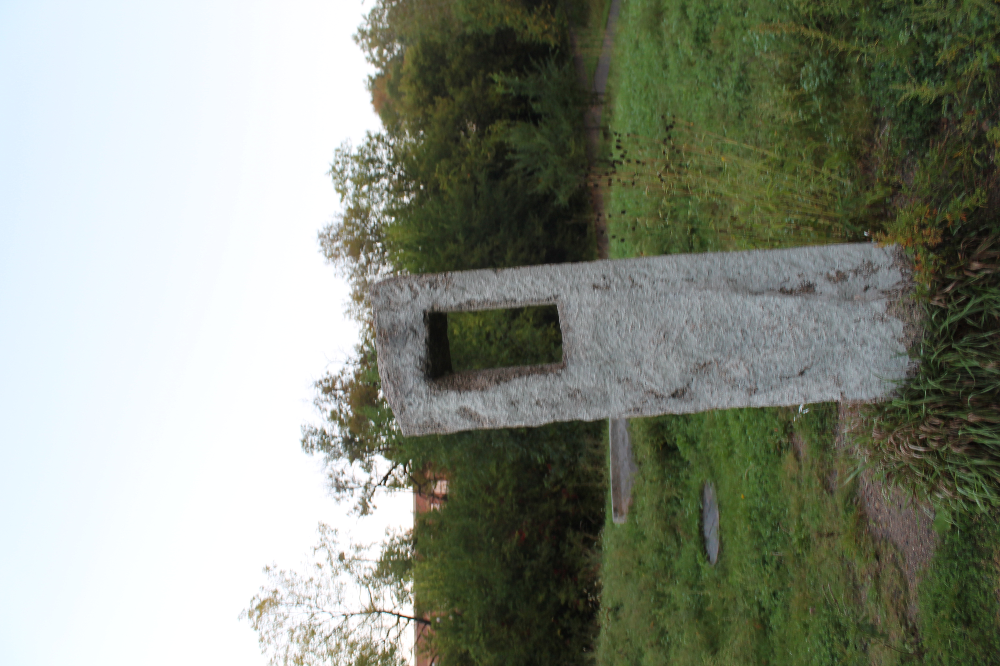
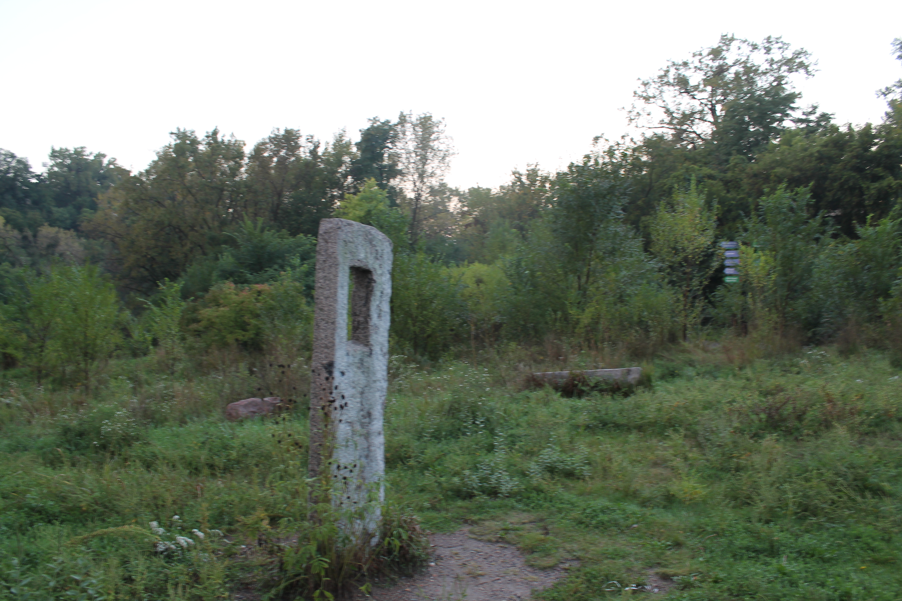
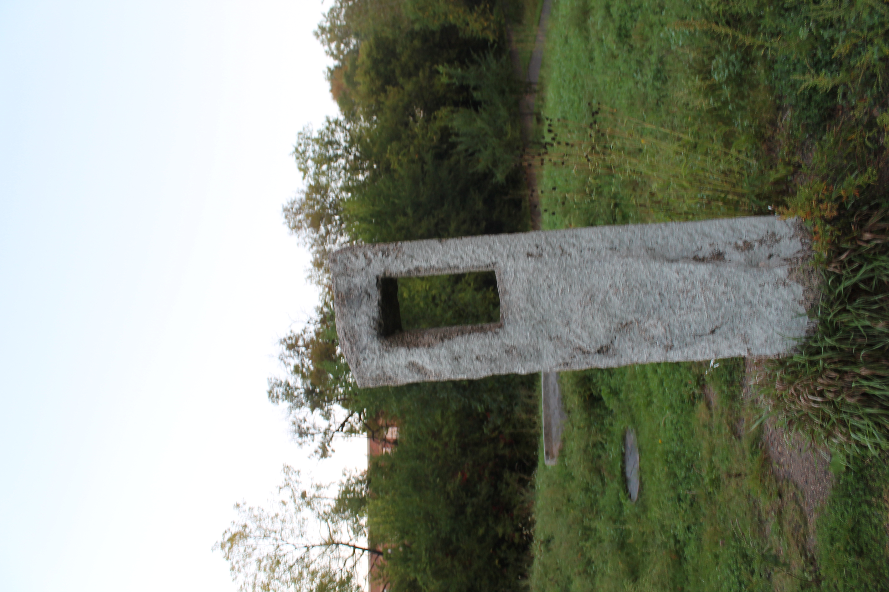
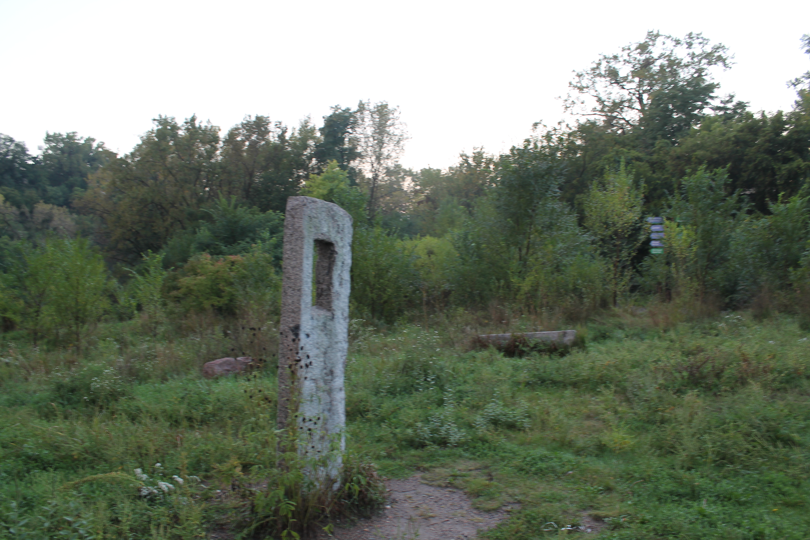

Hidden below the Dayton’s Bluff neighborhood is a rare oasis from the concrete jungle. Swede Hollow Park, though is no more than a short walk away from Metropolitan State University’s Saint Paul Campus, currently houses an abundance of wildlife and greenery. However, it wasn’t always so serene.
Going back to 1839, the Hollow’s origins predate the incorporation of Saint Paul itself. Early settler Edward Phalen built a simple log cabin there, which grew into a small community of hovels used as resting places for hunters, trappers and lumbermen. In the late 1850s, Swedish immigrants moved into the now-empty structures, paying only a small city rental fee.
By 1890, as many as 90 Swedish families had settled in to this small ravine. Records from the 1905 State Census showed a population of more than 1,000. Bisected by Phalen Creek and flanked on each side by 60 to 80 foot high cliffs, it was affectionately called “Svenska Dale,” or Swedish Dale. But it became more commonly known as Swede Hollow. When the residents became more established and moved away, newer immigrants would take their place.
Many of Swede Hollow’s early inhabitants were immigrants. It was here that newly-arrived immigrants could transition into American life while still retaining some of their traditional values and customs.
Many took jobs in the local milling and brewing industries, one being the original Hamms brewery. Others found work with the railroad, which began running trains through the Hollow in 1865. In fact, because it was an access point for foot and vehicle traffic passing under the railroad tracks that existed then, the park’s tunnel where we entered used to be much deeper.
As these residents became more financially stable and moved “up on the street,” as it was called, new arrivals hoping for the same chance took their place. And so it went for several decades. But as the twentieth century progressed, Saint Paul was one of many cities looking to modernize. Concerns were raised about Swede Hollow’s living conditions because it lacked electricity and city sewer or water. In December of 1956, city officials deemed it a health hazard, forced the residents out, and burned down the remaining buildings.
For a decade or more, Swede Hollow sat neglected. Some city residents decided that instead of a trip to the landfill, it was much handier to just toss that old bicycle or radiator off the bluff. So, for a while, Swede Hollow became a dumping ground. But, around 1970 a gradual change began to occur.
Karin DuPaul is longtime Dayton’s Bluff resident. She is also the president of Friends of Swede Hollow (FOSH), a nonprofit organization with a passionate commitment to Swede Hollow Park.
DuPaul and other local residents took it upon themselves to reclaim their beloved Swede Hollow. Volunteering their time and labor, they began cleaning up in earnest. When asked about those efforts, DuPaul herself recalled “a refrigerator and 135 tires.” DuPaul remembers another key contributor in those early reclamation days, “Olivia Dodge, who was president of the Saint Paul Garden Club in the early ‘70s. She was instrumental and a big reason for the revitalization of Swede Hollow.”
“At the time,” according to DuPaul, “the Garden Club was looking for a project with historical and ethnic significance, as well as an ecological community asset. Swede Hollow was the perfect fit.” Recruiting local youth groups to help out, Dodge and her organization gave of their time and energy with the goal of breathing renewed life into the Hollow. A city planning task force was also involved in making the Hollow part of the public park system, and in 1976 Swede Hollow Park was officially dedicated as a nature center.
Fast forward to present day and Swede Hollow Park is full of life once again. Squirrels, egrets, cottonwoods, maples, cattails and wildflowers all make their home here. The park is a mature forest deep in the heart of a large, mature city.
These days, this twenty-seven acre secret forest has much to offer. In place of tracks where the trains used to run is a paved trail where people now run, bike or hike. This trail is part of the Bruce Vento Trail system and runs north to south along the western edge of Swede Hollow Park.
One entrance starts well to the north at Eastside Heritage Park, off of Phalen Boulevard. The other entrance starts from the south at the Bruce Vento Nature Sanctuary close to Kellogg Boulevard, also called 3rd Street East. There is also a small parking lot at the junction of 7th Street East and Payne Avenue. From the west, the third entrance is off of Beaumont. From the east, the fourth entrance can be found off of Greenbrier, which also has parking, or Bates (about directly behind Swede Hollow Café). The easterly entrance also has one more feature going down into the Hollow—a lot of steps.
Near the south entrance are the stone arches under Seventh Street East, built in 1883 as part of what was called the Seventh Street Improvement. The arches have a unique shape called “helicoidal,” a spiral design giving them extra strength. This was needed for utility lines and for the fifteen feet of vertical earth above, which was added to level out the 7th Street hill. These arches are on the National Register of Historic Places and are extremely rare even today.
Another rare structure at Swede Hollow Park is Swedehenge, or, as DuPaul fondly called it, “The Henge.” Designed by a local artist, it is a circular outcropping of various stones set atop a small hill. Every year, when the sun is just right in the sky, DuPaul gathers with her friends. They all meet at The Henge to “watch the glow of the setting sun on the Red Brick Brewery.” Afterwards, they share food, stories and laughs.
This sunken forest is a peaceful world away from the concrete jungle above it. It is a welcome reprieve for those of us living up on the street.